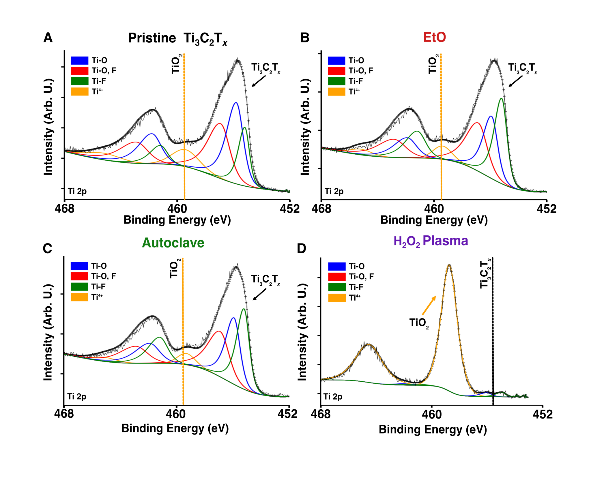
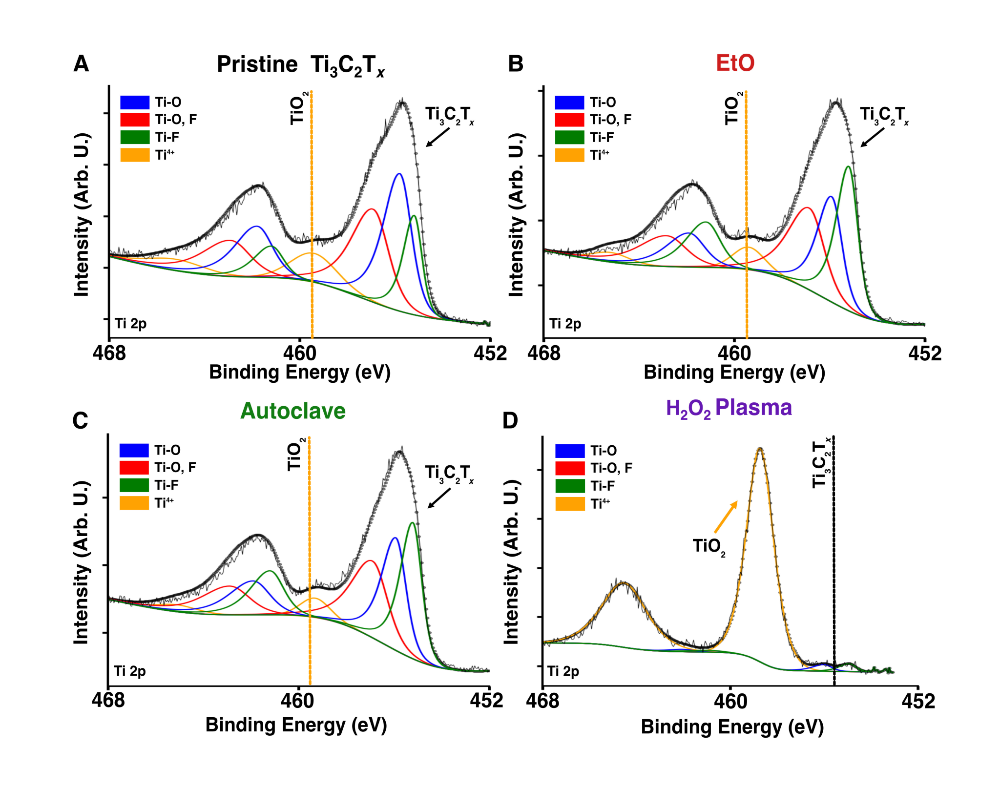

Stability of Ti3C2Tx MXene Films and Devices under Clinical Sterilization Processes
This study presents a comprehensive evaluation of the compatibility of Ti₃C₂Tₓ MXene bioelectronic devices with three widely used clinical sterilization techniques—ethylene oxide (EtO), autoclave, and hydrogen peroxide (H₂O₂) gas plasma—providing critical insights for the translation of MXene-based technologies into clinical and surgical applications. Using both thin-film and textile-based MXene–PDMS composite microelectrode arrays, the work systematically explores how each sterilization modality affects MXene’s structural integrity, electrical functionality, electrochemical properties, and sterility.
EtO and autoclave sterilization were found to preserve both the crystalline structure and mechanical properties of Ti₃C₂Tₓ. Electrochemical impedance spectroscopy (EIS), cyclic voltammetry (CV), and voltage transient (VT) analyses demonstrated that key electrical characteristics—including impedance magnitude, charge storage capacity, and charge injection capacity—remained stable or improved after sterilization. Notably, autoclaved MXene films exhibited a slight reduction in low-frequency impedance and a disappearance of double-phase peaks in EIS, suggesting that thermal exposure may facilitate the removal of intercalated water, leading to improved electrode–electrolyte interface properties.
In contrast, H₂O₂ gas plasma treatment induced severe degradation. Films exposed to H₂O₂ showed substantial declines in conductivity, visible cracking and delamination, and diminished electrochemical performance. Although XRD and Raman spectroscopy did not detect the presence of crystalline titanium dioxide (TiO₂), XPS revealed clear evidence of surface oxidation, confirming that oxidative degradation occurs within the top 10 nm of the MXene surface. These findings underscore the susceptibility of Ti₃C₂Tₓ to H₂O₂-mediated radical damage and UV-induced decomposition—mechanisms that are also known to degrade other emerging soft bioelectronic materials such as PEDOT:PSS.
Importantly, both EtO and autoclave treatments effectively eliminated E. coli contamination from the surface of MXene devices in a single sterilization cycle, validating their effectiveness for standard biosafety protocols. This makes them suitable for integration into surgical workflows without compromising material performance or device reliability.
By establishing for the first time that Ti₃C₂Tₓ MXene devices are compatible with standard clinical sterilization methods, this work significantly advances the pathway toward real-world deployment of MXene-enabled technologies in wearable and implantable systems. Moreover, it highlights the necessity of sterilization-aware materials engineering and encourages future studies into the synthesis and surface chemistry modifications that could further enhance MXene’s robustness in clinical settings
 
